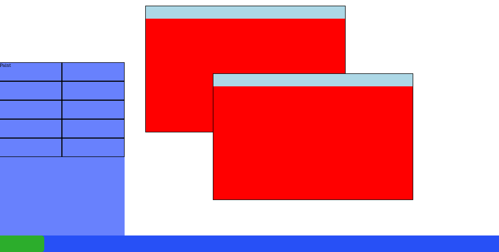

The Retro UI project is definitely challenging and complicated but i'm enjoying it so far. Today i made the progress i was intending since yesterday, which was make all windows movable with mouse movement. It behaves a little like this:
Now what i want to do is to make all the Windows a object inside Windows Manager. I need to see how i did it in the old code and apply it in the same way. It just now came to me that i might not be allowed to be doing this bc of copyright, but i want to reinforce this has purely learning purposes, not a financial one. So please don't sue me i guess
I'm letting go of the idea of making every Window a object bc the code is getting confusing and convoluted, and the only way i got it working was without it